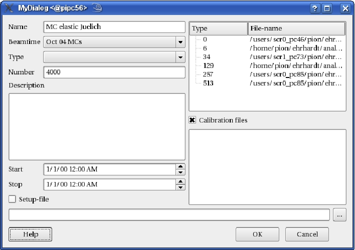

This work is licensed under a cc by-nc-sa 3.0 Unported License unless marked otherwise.
| The run-display shows the properties of a single run_parameter. This includes the name, the parenting beam-time, the type, the run-number, a description, the begin and the stop of recording, a setup-file (and a switch to set the own setup on/off), calibration files (with a switch to use the parenting ones) and the input files. |  |
|
This work is licensed under a cc by-nc-sa 3.0 Unported License unless marked otherwise. |